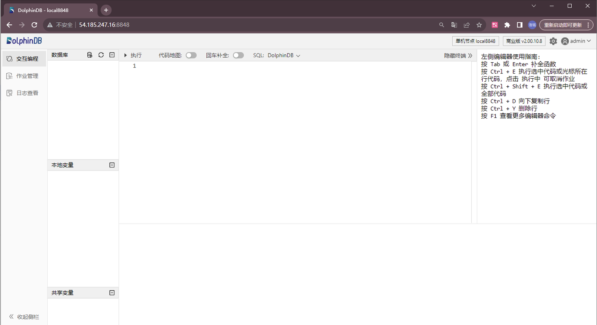
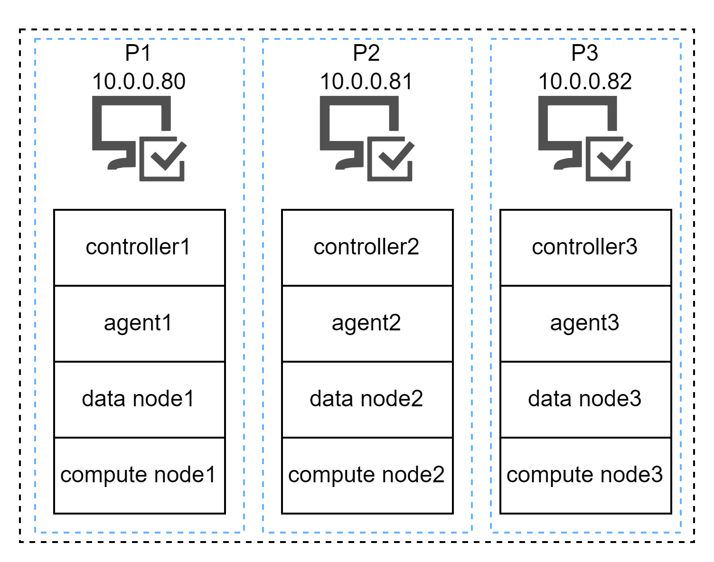
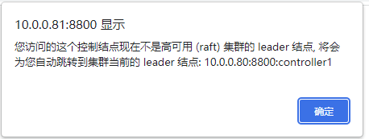
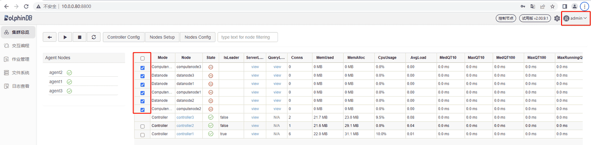
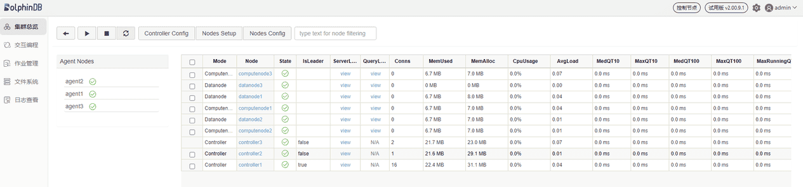

使用 Terraform 在云上部署 DolphinDB
本教程将介绍如何通过 Terraform 快速地在 AWS 部署 DolphinDB 单节点和高可用集群。
Terraform 概述
HashiCorp Terraform 是一款基础架构即代码工具，旨在实现 "Write, Plan, and Create Infrastructure as Code"。它通过配置文件来描述云资源的拓扑结构，包括虚拟机、存储账户和网络接口。Terraform 几乎支持市面上所有的云服务，能够通过代码管理 IT 资源，并自动化部署资源，从而避免手动部署可能引发的错误。此外，Terraform 的命令行接口（CLI）简化了将配置文件部署到 AWS 或其他云平台的过程。
Terraform 包含以下功能：
- 基础设施即代码：Terraform 使用特定的配置语言 HCL(Hashicorp Configuration Language) 来描述基础设施资源。这使得 Terraform 能够以代码的形式描述解决方案或基础架构，并实现对它们的版本控制和管理。同时，通用的解决方案和基础架构可以以模板的形式便捷地进行共享和复用。
- 执行计划：在执行 Terraform 代码之前，可以通过
terraform plan命令解析 Terraform 模板，并生成一个可执行的计划。这个计划包含了当前模板需要创建或变更的资源及其属性。用户预览执行计划以确认模板的内容是否正确。在确认无误后，通过terraform apply命令来执行计划，以完成所定义资源的创建或变更。这个过程允许在实际操作之前对变更内容进行审核和验证。 - 资源拓扑：Terraform 根据模板中的定义来构建资源拓扑图。Terraform 并行创建无依赖关系的资源，以提高执行效率。而对于存在依赖关系的资源，Terraform 则优先执行被依赖的资源，以确保创建或修改资源的顺序正确。
- 自动化变更：Terraform 拥有强大的自动化变更功能。通过
terraform apply命令，可以实现复杂资源的无缝变更。Terraform 不仅简化了创建、修改和删除等变更操作，还保持了计划的一致性。此外，Terraform 还提供了回滚和恢复机制，能够有效地减少人为错误，提高系统的可靠性和稳定性。
使用前提
准备环境
在进行 Terraform 相关操作之前，请确保完成以下准备工作：
- 安装 Terraform CLI（版本 1.2.0 及以上）
- 安装 AWS CLI
- 拥有 AWS account 和 associated credentials
完成上述步骤后，执行以下命令，验证环境配置的正确性：
$ terraform -help
Usage：terraform [-version] [-help] <command> [args]
The available commands for execution are listed below.
The most common, useful commands are shown first, followed by
less common or more advanced commands. If you're just getting
started with Terraform, stick with the common commands. For the
other commands, please read the help and docs before usage.
#...
$ aws --version
aws-cli/2.10.0 Python/3.11.2 Linux/4.14.133-113.105.amzn2.x86_64 botocore/2.4.5设置 AWS 凭据
在使用 Terraform 前，AWS 会对 Terraform 进行身份验证，需要设置 AWS_ACCESS_KEY_ID 和 AWS_SECRET_ACCESS_KEY 两个环境变量。其中 AWS_ACCESS_KEY_ID 用来设置 Access Key；AWS_SECRET_ACCESS_KEY 用来设置 Secret Key。在 Linux 或 macOS 环境下，通过 export 命令进行设置：
export AWS_ACCESS_KEY_ID=YourAccessKeyId
export AWS_SECRET_ACCESS_KEY=YourSecretAccessKey在 Windows 环境下，通过 set 命令进行设置：
set AWS_ACCESS_KEY_ID=YourAccessKeyId
set AWS_SECRET_ACCESS_KEY=YourSecretAccessKey部署 DolphinDB 单节点
创建 Terraform 项目
创建一个 Terraform 项目文件夹，以下是项目文件夹的结构：
project_directory
|-- main.tf
|-- variables.tf
|-- files.tfvars其中，每个文件的作用为：
- main.tf： Terraform 项目的入口文件，其中定义了基础设施资源的配置和参数。用户通过编写 main.tf 文件来定义要创建的云资源、网络设置以及它们之间的关系等。
- variables.tf：用于定义和声明 Terraform 配置中使用的变量。变量是可以在 Terraform 代码中引用的参数，有助于提高代码的复用性和灵活性。变量可以有不同的类型，如字符串、数字、布尔值、列表和字典等。用户可以通过 variables.tf 来定义项目中需要的各种参数，如区域、实例类型、密钥等。
- files.tfvars：用于存储 Terraform 配置中所使用的变量的值，例如指定区域、实例类型、密钥等。这些变量可以在 Terraform 模块中定义，并且在部署时可以通过 files.tfvars 文件来指定它们的具体取值。这种做法使得在不同环境中使用相同的 Terraform 配置变得更加灵活，因为可以通过不同的 .tfvars 文件来为不同环境提供不同的变量值，而无需修改实际的 Terraform 配置文件。
配置 main.tf 文件
以下展示了 main.tf 文件的部分内容，完整代码请参考本教程结尾附件部分：
# 声明 Terraform 提供者及其版本
terraform {
......
}
# 配置 AWS 提供者
provider "aws" {
......
}
# 创建 AWS 实例资源（dolphindb_server）
resource "aws_instance" "dolphindb_server" {
......
}
# 创建 AWS EBS 卷资源（data）
resource "aws_ebs_volume" "data" {
......
}
# 创建 AWS EBS 卷附加资源（data_attachment）
resource "aws_volume_attachment" "data_attachment" {
......
}
# 创建 null_resource（mount_data_volume），用于在实例上挂载数据卷
resource "null_resource" "mount_data_volume" {
......
}
以上代码实现的具体内容为：
- 在已有的 VPC 和子网中生成 1 个 EC2 和 1 个 EBS 卷
- 将 EBS 挂载到 EC2 上
- 下载 DolphinDB
- 修改 DolphinDB 的配置文件和证书，并启动单节点
配置 variables.tf 文件
以下展示了 variables.tf 文件的部分内容，完整代码请参考本教程结尾附件部分：
variable "region" {
type = string
}
variable "instance_name" {
description = "name of EC2"
type = string
default = "TestDolphinDBServerInstance"
}
# EC2 实例的其他参数内容已省略...
variable "ddbversion" {
description = "version of DolphinDB to install"
type = string
}
variable "dolphindb_cfg_content" {
# 替换为您的dolphindb.cfg内容
type=string
}
variable "replace_dolphindb_lic" {
description = "whether to replace dolphindb.lic"
type = bool
default = true
}
variable "dolphindb_lic_content" {
type=string
}
该文件记录配置 DolphinDB 单节点所需要的参数定义说明如下：
- region：必填项，string 类型，要创建的 EC2 所在的 region，比如
us-west-2。 - instance_name：选填项，string 类型，创建的 EC2 的名字，默认为 TestDolphinDBServerInstance。
- ami_id：选填项，string 类型，EC2 使用的 AMI 的 ID。默认为 ami-0fd48c6031f8700df （AWS 上的 centOS 7 镜像），该镜像包含了启动实例所需的操作系统和应用程序。可以在 AWS 公共 AMI 页面查找需要的 AMI ID。
- instance_type：选填项，string 类型，EC2 的机器类型，默认为 t2.micro。可以根据需求，在 EC2 实例类型 页面选择其他实例类型。
- subnet_id：必选项，string 类型，EC2 将处于的子网 ID。
- key_name：必选项，string 类型，用来登录 EC2 的密钥对。
- volume_size：选填项，number 类型，root volume 的大小，默认为 10（单位为 GB）。
- volume_type：选填项，string 类型，root volume 的类型，默认为 gp3，其他可选项包括 gp2, io1, st1, sc1 等。
- az：必填项，string 类型，新建 EBS 所处的可用区。
- datavolume_type：选填项，string 类型，新建 EBS 的类型，默认为 gp3，其他可选项包括 gp2, io1, st1, sc1 等。
- datavolume_size：选填项，number 类型，新建 EBS 的大小，默认为 100 (单位为 GB)。
- destination：选填项，string 类型，新建 EBS 在 EC2 上的挂载点的绝对路径，默认为 /data。
- attachment_device_name：选填项，string 类型，新建 EBS 挂载在 EC2 上的设备名称，默认为 /dev/xvdb。
- key_location：必填项，string 类型，密钥对文件的绝对路径。为了将 EBS 挂载到指定挂载点，需要通过 SSH 连接到 EC2，所以需要提供登录 EC2 的密钥对文件的绝对路径。
- ddb_username：选填项，string 类型，EC2 的用户名称。默认为 centos。
- package_manager_name：选填项，string 类型，包管理器的名称。例如，RHEL 系列的包管理器名为 yum， DEBIAN 系列的包管理器名为 apt-get。默认为 yum。
- security_group_ids：必填项，list(string) 类型，安全组 id。值在 files.tfvar 中定义。注意，DolphinDB 单节点默认使用 8848 作为端口，所以 EC2 所使用的安全组的 inbound rules 里必须允许外界访问 8848 端口。
- ddbversion：必填项，string 类型，DolphinDB 的版本。可在 DolphinDB 官网查看最新版本。
- dolphindb_cfg_content：选填项，string 类型，DolphinDB 配置文件。值在 files.tfvar 中定义。
- replace_dolphindb_lic：选填项，bool 类型，是否替换证书。默认为 true，表示替换证书。若设置为 false，则不替换，使用社区版证书。
- dolphindb_lic_content：必填项，bool 类型，证书内容。值在 files.tfvar 中定义。
配置 files.tfvars 文件
以下展示了 files.tfvars 文件的部分内容，完整代码请参考本教程结尾附件部分：
dolphindb_cfg_content= <<EOF
localSite=localhost:8848:local8848
mode=single
maxMemSize=16
maxConnections=512
workerNum=4
localExecutors=3
maxBatchJobWorker=4
dataSync=1
OLAPCacheEngineSize=2
TSDBCacheEngineSize=1
newValuePartitionPolicy=add
maxPubConnections=64
subExecutors=4
perfMonitoring=true
lanCluster=0
EOF
dolphindb_lic_content= <<EOF
......
EOF
security_group_ids=[<your security group ids>]files.tfvars 文件是记录 Terraform 变量的文件，其中包含了一些关键配置项。以下是对每个变量的简要说明：
- dolphindb_cfg_content：DolphinDB 配置文件内容，包含了 DolphinDB 服务器的配置参数。如果需要详细的配置参数信息，可以参考 DolphinDB 官方配置说明：参数配置。
- dolphindb_lic_content：DolphinDB 的证书内容，用于许可验证。可在这里配置社区或企业版 license。
- security_group_ids：安全组 ID，用于定义 EC2 实例的入站和出站流量规则。
执行 Terraform 命令
通过终端进入 Terraform 项目文件夹：
cd /path/to/Dolphindb-Terraform初始化目录：
terraform init部署实例，可以根据实际的资源和需求来填写 variables.tf 文件中定义的变量：
terraform apply -var "region=<your_region>" -var "subnet_id=<your_subnet_id>"
-var "key_name=<your_key_pair_name>" -var "ddbversion=2.00.10.8" -var "az=<your_az>"
-var "key_location=<absolute_path_of_your_key_pair>" -var-file="files.tfvars"按照提示输入 yes 确认创建资源。等待 Terraform 完成部署。
登录 Web 管理界面验证节点正确运行
在浏览器中输入部署服务器 IP 地址和部署端口号（默认是 8848）。若可以打开 Web 管理界面，则表示 DolphinDB 单节点运行正常。打开后的 Web 管理界面如下，以管理员身份（默认账号：admin，默认密码：123456）进行登录。

DolphinDB 高可用集群部署
本教程示例集群的部署架构图如下：
请注意该 IP 仅用于示例，实际 IP 由设置的 subnet 以及部署 EC2 实例时自动生成。
部署高可用集群前的要求和准备：
- 申请企业版 license：因为集群超过了社区版试用授权许可节点数的限制，所以必须申请企业版 license。
- 部署了数据节点或者计算节点的服务器必须同时部署 1 个代理节点，以便用于启动和关闭该服务器上的数据节点或计算节点。
- 在 AWS 中创建 1 个 VPC，其中至少包含 3 个子网。接下来将在 1 个 VPC 的不同子网下分别部署 DolphinDB 集群，以构建 DolphinDB 高可用集群。
创建 Terraform 项目
创建一个 Terraform 项目文件夹，以下是项目文件夹的结构：
project_directory
|-- main.tf
|-- variables.tf
|-- files.tfvars
|-- output.tf其中，每个文件的作用为：
- main.tf：Terraform 项目的入口文件，其中定义了基础设施资源的配置和参数。用户通过编写 main.tf 文件来定义要创建的云资源、网络设置等，以及它们之间的关系。
- variables.tf：用于定义和声明 Terraform 配置中使用的变量。变量是可以在 Terraform 代码中引用的参数，有助于提高代码的复用性和灵活性。变量可以有不同的类型，如字符串、数字、布尔值、列表和字典等。用户可以通过 variables.tf 来定义项目中需要的各种参数，如区域、实例类型、密钥等。
- files.tfvars：用于存储 Terraform 配置中所使用的变量的值，例如指定区域、实例类型、密钥等。这些变量可以在 Terraform 模块中定义，并且在部署时可以通过 files.tfvars 文件来指定它们的具体取值。这种做法使得在不同环境中使用相同的 Terraform 配置变得更加灵活，因为可以通过不同的 .tfvars 文件来为不同环境提供不同的变量值，而无需修改实际的 Terraform 配置文件。
- output.tf：用于定义 Terraform 部署完成后需要输出的信息。在这个文件中，你可以指定需要输出的资源属性，比如 IP 地址、域名等，这样在部署完成后，你就可以方便地获取这些信息以便后续的操作或者其他系统使用。
配置 main.tf 文件
以下展示了 main.tf 文件的部分内容，完整代码请参考本教程结尾附件部分：
# 声明 Terraform 提供者及其版本
terraform {
......
}
# 配置 AWS 提供者
provider "aws" {
......
}
# 创建 AWS 实例资源（ddb_p1）
resource "aws_instance" "ddb_p1" {
......
}
# 创建其他两个 AWS 实例资源（ddb_p2、ddb_p3），与 ddb_p1 的配置类似
# ......
# 创建 AWS EBS 卷资源（data_p1）
resource "aws_ebs_volume" "data_p1" {
......
}
# 创建其他两个 AWS EBS 卷资源（data_p2、data_p3），与 data_p1 的配置类似
# ......
# 创建 AWS EBS 卷附加资源（data_attachment_p1）
resource "aws_volume_attachment" "data_attachment_p1" {
......
}
# 创建其他两个 AWS EBS 卷附加资源，与 data_attachment_p1 配置类似
# ......
# 创建 null_resource（mount_data_volume_p1），用于在实例上挂载数据卷
resource "null_resource" "mount_data_volume_p1" {
......
}
# 创建其他两个 null_resource，用于在 ddb_p2 和 ddb_p3 上挂载数据卷，配置 DolphinDB 等，与 mount_data_volume_p1 的配置类似
# ......以上代码实现的具体内容为：
- 在已有的 VPC 和子网中生成 3 个 EC2 和 3 个 EBS 卷
- 分别将 EBS 挂载到 EC2 上
- 分别下载 DolphinDB
- 修改 DolphinDB 的配置文件和证书，并启动高可用集群
配置 variables.tf 文件
以下展示了 variables.tf 文件的部分内容，完整代码请参考本教程结尾附件部分：
# EC2 实例的其他参数内容已省略...
variable "ddbversion" {
description = "version of DolphinDB to install"
type = string
}
variable "replace_dolphindb_lic" {
description = "whether to replace dolphindb.lic"
type = bool
default = true
}
variable "dolphindb_lic_content" {
type = string
}
variable "cluster_nodes" {
type = string
}
variable "cluster_cfg" {
type = string
}
variable "controller_cfg_p1" {
type = string
}
variable "agent_cfg_p1" {
type = string
}
# P2 P3 相关内容已省略...该文件用于存放 DolphinDB 高可用集群配置所需要的参数定义，其中一部分参数与部署 DolphinDB 单节点时的参数含义相同，这里不再赘述，仅说明不同配置参数：
- subnet_id_p1：必选项，string 类型，P1 所在的 EC2 将处于的子网 ID。
- subnet_id_p2：必选项，string 类型，P2 所在的 EC2 将处于的子网 ID。
- subnet_id_p3：必选项，string 类型，P3 所在的 EC2 将处于的子网 ID。
- az_p1：必填项，string 类型，P1 新建 EBS 所处的可用区。
- az_p2：必填项，string 类型，P2 新建 EBS 所处的可用区。
- az_p3：必填项，string 类型，P3 新建 EBS 所处的可用区。
- ddbversion：必填项，string 类型，DolphinDB 的版本。可在 DolphinDB 官网查看最新版本。
- replace_dolphindb_lic：选填项，bool 类型，是否替换证书。默认为 true，表示替换证书。若设置为 false，则不替换，使用社区版证书。
- dolphindb_lic_content：必填项，bool 类型，证书内容。值在 files.tfvar 中定义。
- security_group_ids：必填项，list(string) 类型，安全组 id。值在 files.tfvar 中定义。注意，DolphinDB 使用 8800、8801、8802端口，所以 EC2 所使用的安全组的 inbound rules 里必须允许外界访问这些端口。
- cluster_nodes：选填项，string 类型，集群成员配置参数。值在 files.tfvar 中定义。
- cluster_cfg：选填项，string 类型，数据节点和计算节点配置变量。值在 files.tfvar 中定义。
- controller_cfg_p1：选填项，string 类型，P1 控制节点配置变量。值在 files.tfvar 中定义。
- agent_cfg_p1：选填项，string 类型，P1 代理节点配置变量。值在 files.tfvar 中定义。
- controller_cfg_p2：选填项，string 类型，P2 控制节点配置变量。值在 files.tfvar 中定义。
- agent_cfg_p2：选填项，string 类型，P2 代理节点配置变量。值在 files.tfvar 中定义。
- controller_cfg_p3：选填项，string 类型，P3 控制节点配置变量。值在 files.tfvar 中定义。
- agent_cfg_p3：选填项，string 类型，P3 代理节点配置变量数。值在 files.tfvar 中定义。
配置 files.tfvars 文件
在 files.tfvars 文件中添加以下内容：
# 企业版 license
dolphindb_lic_content = <<EOF
EOF
security_group_ids = []
cluster_nodes = <<EOF
localSite,mode
P1_PRI_IP:8800:controller1,controller
P2_PRI_IP:8800:controller2,controller
P3_PRI_IP:8800:controller3,controller
P1_PRI_IP:8801:agent1,agent
P1_PRI_IP:8802:datanode1,datanode
P1_PRI_IP:8803:computenode1,computenode
P2_PRI_IP:8801:agent2,agent
P2_PRI_IP:8802:datanode2,datanode
P2_PRI_IP:8803:computenode2,computenode
P3_PRI_IP:8801:agent3,agent
P3_PRI_IP:8802:datanode3,datanode
P3_PRI_IP:8803:computenode3,computenode
EOF
cluster_cfg = <<EOF
maxMemSize=32
maxConnections=512
workerNum=4
maxBatchJobWorker=4
OLAPCacheEngineSize=2
TSDBCacheEngineSize=2
newValuePartitionPolicy=add
maxPubConnections=64
subExecutors=4
lanCluster=0
enableChunkGranularityConfig=true
datanode1.publicName=P1_PUB_IP
computenode1.publicName=P1_PUB_IP
datanode2.publicName=P2_PUB_IP
computenode2.publicName=P2_PUB_IP
datanode3.publicName=P3_PUB_IP
computenode3.publicName=P3_PUB_IP
EOF
controller_cfg_p1 = <<EOF
mode=controller
localSite=P1_PRI_IP:8800:controller1
dfsReplicationFactor=2
dfsReplicaReliabilityLevel=1
dataSync=1
workerNum=4
maxConnections=512
maxMemSize=8
dfsHAMode=Raft
lanCluster=0
publicName=P1_PUB_IP
EOF
agent_cfg_p1 = <<EOF
mode=agent
localSite=P1_PRI_IP:8801:agent1
controllerSite=P1_PRI_IP:8800:controller1
sites=P1_PRI_IP:8801:agent1:agent,P1_PRI_IP:8800:controller1:controller,P2_PRI_IP:8800:controller2:controller,P3_PRI_IP:8800:controller3:controller
workerNum=4
maxMemSize=4
lanCluster=0
EOF
# P2 P3 相关内容已省略...files.tfvars 文件记录了 Terraform 的变量，其中包含了一些关键配置项。以下是对每个配置项的简要说明：
- dolphindb_lic_content：证书内容。这是 DolphinDB 的证书内容，用于许可验证。可在这里配置企业版license。
- security_group_ids：安全组 ID，用于定义 EC2 实例的入站和出站流量规则。
- cluster_nodes：集群成员配置参数。
- cluster_cfg：数据节点和计算节点配置参数。
- controller_cfg_p1：P1 控制节点配置参数。
- agent_cfg_p1：P1 代理节点配置参数。
- controller_cfg_p2：P2 控制节点配置参数。
- agent_cfg_p2：P2 代理节点配置参数。
- controller_cfg_p3：P3 控制节点配置参数。
- agent_cfg_p3：P3 代理节点配置参数。
配置 output.tf 文件
在 output.tf 文件中添加以下内容：
output "public_ip_p1" {
value = aws_instance.ddb_p1.public_ip
}
output "private_ip_p1" {
value = aws_instance.ddb_p1.private_ip
}
output "public_ip_p2" {
value = aws_instance.ddb_p2.public_ip
}
output "private_ip_p2" {
value = aws_instance.ddb_p2.private_ip
}
output "public_ip_p3" {
value = aws_instance.ddb_p3.public_ip
}
output "private_ip_p3" {
value = aws_instance.ddb_p3.private_ip
}这些参数会在集群部署完成后输出，下面是参数解释：
- public_ip_p1：p1 的公网 IP
- private_ip_p1：p1 的私网 IP
- public_ip_p2：p2 的公网 IP
- private_ip_p2：p2 的私网 IP
- public_ip_p3：p3 的公网 IP
- private_ip_p3：p3 的私网 IP
执行 Terraform 命令
通过终端进入 Terraform 项目文件夹：
cd /path/to/Dolphindb-Terraform初始化目录：
terraform init部署实例，可以根据实际的资源和需求来填写 variables.tf 文件中定义的变量：
terraform apply -var "region=<your_region>" -var "subnet_id_p1=<your_subnet_id_p1>" -var "subnet_id_p2=<your_subnet_id_p2>" -var "subnet_id_p3=<your_subnet_id_p3>" -var "key_name=<your_key_pair_name>" -var "ddbversion=2.00.10.8" -var "az_p1=<your_az_p1>" -var "az_p2=<your_az_p2>" -var "az_p3=<your_az_p3>" -var "key_location=<absolute_path_of_your_key_pair>" -var-file="files.tfvars"按照提示输入 yes 确认创建资源。等待 Terraform 完成部署。
通过 Web 管理界面检查 DolphinDB 节点运行
可以通过 Web 管理界面启动或关闭数据节点和计算节点，以及修改集群的配置。在浏览器中输入任一控制节点的 IP 地址和端口号即可进入 Web 管理界面，例如，P2 上控制节点的 IP 为 10.0.0.81，端口号为 8800，所以访问地址为 10.0.0.81:8800。访问后若出现如下提示，表明当前控制节点不是 Leader 节点，点击确定即可自动跳转至 Leader 节点：

打开后的 Web 管理界面如下。以管理员身份（默认账号：admin，默认密码：123456）登录后，勾选数据节点和计算节点，再点击启动（关闭）按键即可启动（关闭）相应的数据节点和计算节点：

刷新页面后可看到对应的数据节点和计算节点已启动，如下图所示：

常见问题解答(FAQ)
如何为创建的实例配置 SSH 登录？
在 AWS EC2 中，key_name 参数用于指定启动实例时要使用的密钥对的名称。密钥对用于对实例进行身份验证，从而允许用户通过 SSH 登录到实例。以下是详细的步骤：
创建密钥对：
a. 在 AWS 控制台中导航到 EC2。
b. 在左侧导航栏中，选择 "Key Pairs"（密钥对）。
c. 单击 "Create Key Pair"（创建密钥对）。
d. 输入密钥对的名称，然后选择 "Create"（创建）。
e. 保存生成的私钥文件（通常以
.pem结尾）。将私钥文件添加到 SSH 代理：
在本地计算机上，使用以下命令将私钥添加到 SSH 代理。请将
/path/to/your-key.pem替换为第一步中保存的私钥文件的实际路径。
ssh-add /path/to/your-key.pem- 设置密钥对名称和文件位置
terraform apply // 其他变量... -var "key_name=<your_key_pair_name>" -var "key_location=<absolute_path_of_your_key_pair>"- SSH 登录到实例：
使用以下命令通过 SSH 登录到 EC2 实例。请将 your-instance-ip 替换为实际的 IP 地址。
ssh -i /path/to/your-key.pem ec2-user@your-instance-ip注意：ec2-user 是 Amazon Linux AMI 的默认用户名。请根据实际使用的 AMI 修改用户名，例如，若 AMI 是Ubuntu，则用户名填 ubuntu。
如何更新软件授权许可
在 files.tfvars 文件中，将 dolphindb_lic_content 变量的内容替换为企业版授权许可内容。同时，确保 variables.tf 文件中 replace_dolphindb_lic 的值设为 true（默认为 true）。
dolphindb_lic_content= <<EOF
// 替换后的 dolphindb.lic 文件内容
EOF附录
- 部署 DolphinDB 单节点完整项目代码代码：
- 部署 DolphinDB 高可用集群完整代码：